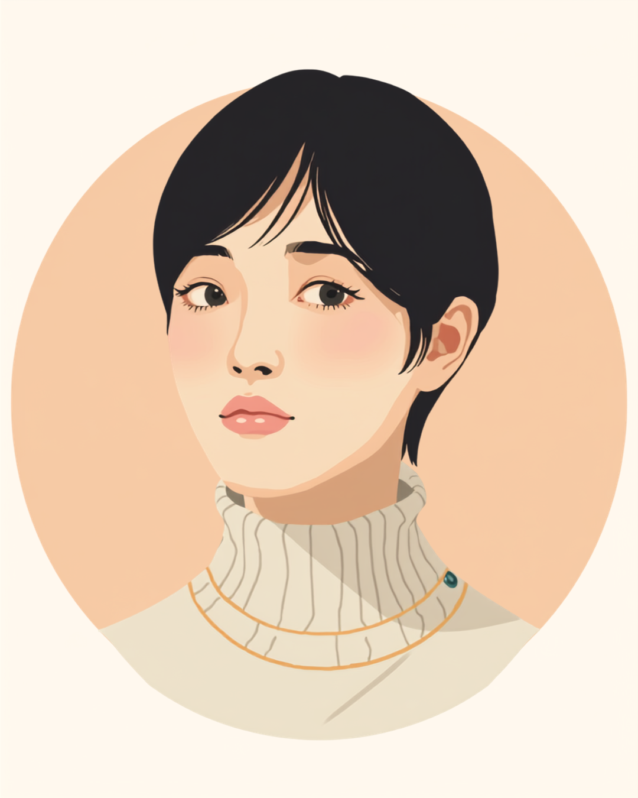

復職面談で「もう大丈夫です」と答えたのに、面談室を出た瞬間に涙が止まらなくなった。そんな経験をした方は少なくないようです。この記事では、うつ病や適応障害からの復職を控えた方が復職面談で本音を隠してしまう理由と、実際に聞かれる内容、無理のない伝え方を当事者の声をもとに整理しました（2026年9月時点の情報です）。
PR


面談中は笑えたのに、一人になった瞬間に崩れるのはなぜか

復職面談は、休職していた方が仕事に戻る前に、体調や働き方の希望を会社側とすり合わせるための場です。上司や人事担当者との面談のほか、産業医がいる会社では産業医面談が設けられることもあります。まめざる
就労支援の現場で関わってきた中で、復職を控えた方から繰り返し聞いてきた言葉があります。「面談のときはちゃんと『大丈夫です』って言えたのに、エレベーターに乗った瞬間に涙が出てきて、自分でもびっくりした」というものです。復職面談という場は、思っている以上に緊張する場面のようで、体調をそのまま伝えるつもりでいても、いざ聞かれると反射的に軽い言葉を選んでしまう方が少なくないようです。
この反射的な受け答えには、いくつかの気持ちが重なっていることが多いようです。「復職を先延ばしにされたくない」「これ以上、周りに心配や迷惑をかけたくない」「まだ本調子じゃないと認めるのが自分でも怖い」。どれも自然な気持ちですが、結果として面談の場では実際の体調より軽い言葉が出てしまい、面談が終わって気が抜けた瞬間に、抑えていたものが表に出てくることがあるようです。
!
復職面談の回数や担当者、聞かれる内容の詳しさは会社によって異なります。この記事で挙げる内容がそのまま当てはまるとは限らないため、不安なことがあれば主治医や産業医に相談することをお勧めします。
「うつ病で8ヶ月休んで、復職面談に行ったんですけど、人事の人に『体調はどうですか』って聞かれた瞬間、反射で『もう大丈夫です』って言ってました。全然大丈夫じゃなかったのに。面談自体は10分くらいで終わって、拍子抜けするくらいあっさりしてたんですけど、会社のビルを出た瞬間に涙が止まらなくなって、駅のベンチで30分くらい座ってました。あのとき正直に言えてたら、最初の1ヶ月がもう少し楽だったかもしれないと今は思います。」
30代・女性（うつ病・営業事務職）
「適応障害で4ヶ月休職して、復職前に産業医面談がありました。正直言うと、また同じ部署に戻るのがめちゃくちゃ怖くて。でも『大丈夫です』って言えばすぐ元の部署に戻される気がして、思い切って『まだ怖い気持ちがあります』って伝えたんです。そしたら『では最初の1ヶ月は別チームでならせましょう』って提案してもらえて。正直に言って良かったなと、今振り返ると思います。」
20代・男性（適応障害・システムエンジニア職）
「パニック障害で休んでいたとき、復職面談で『会議は大丈夫です』って言ってしまったんですけど、実際に復職後最初の会議で発作みたいな感覚が出て、途中で退室することになりました。あとから思えば、面談のときに『人数が多い会議は少し不安がある』くらいは言っておけばよかったんです。強がる意味、あんまりなかったなと今は思ってます。」
40代・女性（パニック障害・経理職）
復職面談で実際に聞かれること
復職面談で聞かれる内容は会社によって差があるものの、大きく分けると生活リズム・通院や服薬の状況・休職中の過ごし方・復職後の不安や希望する配慮の4つに整理できることが多いようです。医学的な診断名を細かく聞かれるというより、「今どんな生活ができているか」「働くうえでどんな場面に不安があるか」を確認される場と捉えると、身構えすぎずに臨みやすいかもしれません。
i
産業医面談がある会社では、上司との面談とは別に、医学的な視点から就業の可否や必要な配慮を確認する場が設けられることがあります。両方が設定される会社もあれば、どちらか一方のみの会社もあり、体制は勤務先によって異なります。
このグラフのように、面談中に本音を抑え込むと、その分は消えるのではなく後から出てくることが多いようです。面談の場を無事に乗り切ることだけを目標にしてしまうと、かえって復職後の負担が大きくなる場合があります。
「大丈夫です」より伝わる、本音の言葉の選び方
強すぎる言葉を避けるという考え方
「もう大丈夫です」「絶対に頑張ります」といった強い言葉は、聞いている側に「これ以上の配慮は必要ない」という誤ったメッセージを与えてしまうことがあるとされています。体調をよく見せたい気持ちは自然なものですが、面談の目的は評価されることではなく、無理なく働き続けるための調整をすることだと捉え直してみると、言葉の選び方も変わってくるかもしれません。
相談の一コマ

相談者
面談で「不安なことはありますか」って聞かれると、つい「特にないです」って言っちゃうんです。本当は会議とか、人が多い場所がまだ怖いのに。
まめざる
「特にないです」と答えると、会社側は配慮が必要ないと受け取ってしまいます。「会議は少し不安がある」くらいの言い方でも、十分に伝わりますよ。
相談者
それくらいなら言えそうです。「絶対無理です」とかじゃなくていいんですね。
まめざる
はい。強い言葉である必要はありません。「今のところ」「まだ少し」という言い方のほうが、会社側も次の一歩を一緒に考えやすくなるはずです。
「大丈夫です」を全部やめる必要はありません。「今のところは大丈夫ですが、会議室のような場所はまだ少し不安があります」のように、大丈夫な部分と不安な部分を分けて伝えるだけでも、相手の受け取り方はだいぶ変わるはずです。まめざる
具体的な場面を挙げて伝える言い方の例をいくつか挙げてみます。
- 「今のところ体調は落ち着いていますが、人数の多い会議はまだ少し不安があります」
- 「復職後1ヶ月ほどは、残業のない働き方から始めたいです」
- 「調子が悪い日があれば、早めに相談させてもらえると助かります」
- 「通院は月に1回のペースで続く予定です」
病名や治療の詳細まですべて伝える必要はありません。業務に関わる範囲で、具体的な場面を挙げて伝えるだけで、会社側は必要な配慮を考えやすくなるとされています。
再休職への不安と、一人で抱えないための相談先
復職後にまた体調を崩したらどうしよう、という不安を抱える方も多いようです。復職後に体調の波が出ること自体は珍しくないとされていますが、無理を重ねる前に早めに周囲へ伝えることが勧められています。再休職が必要になった場合の傷病手当金などの制度上の扱いは、加入している健康保険の種類や過去の受給状況によって異なるため、事前に人事担当者や社会保険労務士に確認しておくと安心です（2026年9月時点の情報です）。
一人で抱えないための相談先
- 主治医（体調の記録や、復職・再休職についての意見書の相談）
- 職場に選任されている産業医（50人以上の事業場に選任義務あり）
- 人事担当者・上司（業務内容や働き方の調整）
- 就労移行支援事業所・地域障害者職業センター（復職後の定着支援や生活リズムの相談）
復職面談の回数や内容、再休職時の制度の扱いには個人差・会社差があります。この記事の内容がそのまま当てはまるとは限らないため、実際の判断は主治医・産業医・人事担当者とよく相談しながら進めることをお勧めします（2026年9月時点の情報です）。
「大丈夫です」は、自分を守るための言葉でもあります。それでも、少しだけ本音を混ぜて伝えることは、決して弱さの表れではありません。
よくある質問
Q. 復職面談では、実際にどんなことを聞かれますか？
睡眠や食事などの生活リズム、通院や服薬の状況、休職中の過ごし方、復職後に不安な業務や場面、必要な配慮の希望などが聞かれることが多いとされています。会社によって面談の担当者や回数、聞かれる内容の細かさは異なります。
Q. 復職面談で「もう大丈夫です」と言ってしまうのは、なぜですか？
復職を先延ばしにされたくない気持ちや、心配をかけたくない気持ち、まだ本調子でないことを自分でも認めたくない気持ちなどが重なって、実際の体調より軽く見せる言葉を選んでしまうことがあるとされています。これは意思が弱いからではなく、多くの人に見られる反応のひとつのようです。
Q. 本当はまだ不安なのに、正直に伝えてもいいのでしょうか？
不安な気持ちをそのまま伝えることは、復職の可否を下げるためではなく、必要な配慮を一緒に考えるための材料として扱われることが多いとされています。「全く問題ありません」ではなく「この場面は少し不安がある」と具体的に伝えるほうが、結果的に無理のない働き方につながりやすい場合があるようです。
Q. 産業医面談と上司との面談は、何が違うのですか？
産業医面談は医学的な視点から就業の可否や必要な配慮を検討する場、上司との面談は実際の業務内容や働き方を調整する場として役割分担されていることが多いとされています。両方が設定される会社もあれば、どちらか一方のみの会社もあり、体制は勤務先によって異なります。
Q. 復職してから、また体調を崩してしまったらどうすればいいですか？
復職後に体調の波が出ること自体は珍しくないとされています。無理を重ねる前に、早めに主治医や産業医、人事担当者に状況を伝えることが勧められています。再休職が必要になった場合の制度上の扱いは会社や加入している制度によって異なるため、事前に人事や社会保険労務士に確認しておくと安心です（2026年9月時点の情報です）。
大丈夫な部分と不安な部分を、分けて伝えていく
PR


一人で抱え込む前に、今の気持ちを話してみませんか
「まだ迷っている」段階でも大丈夫です。mimemimeの無料相談は、今の状況の整理から一緒に始められます。
無料で話してみる
この記事に、聞いてみたいことはありますか？
「自分の場合はどうなんだろう」と思ったことを、気軽に書いてみてください。いただいた質問は個別にお返事したうえで、匿名で記事にすることがあります。
おのざる
mimemime代表。就労支援の現場経験をもとに、障がいのある方の働く不安に寄り添う記事を執筆。